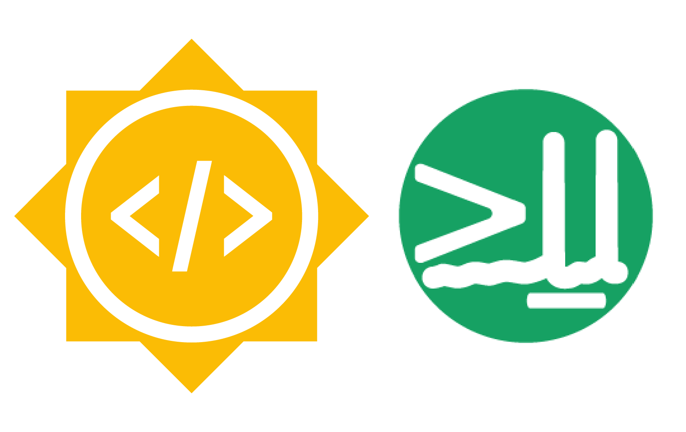

We are participating in Google Summer of Code 2025!#
Join us over the summer and contribute to open-source neuroscience tools
{kind=link}
We are excited to announce our participation in the Google Summer of Code program for 2025!
What is Google Summer of Code?#
Google Summer of Code (GSoC) is a global online programme for introducing new developers to open source software. Participants get hands-on experience in real world development, become part of an open source community and also receive a stipend from Google.
In 2025, NIU has been accepted as a mentoring organisation. This means we’ll be guiding selected contributors through 8-22 week programming projects, pairing them with NIU developers to work on our software tools. So if you’re keen to contribute to open source tools that support neuroscience research, this is your chance!
How can you participate?#
Please check our GSoC page for more details on the program and how to apply to work with us. In short, the process involves:
Checking our project ideas list, to see what projects we have on offer. Our projects for GSoC 2025 are organised under four of our software tools. This is not a definitive list, so if you have a project idea that fits within our scope, feel free to propose it.
Get in touch with us to discuss your project idea. Potential GSoC contributors are encouraged to get in touch with participating organisations to clarify and better outline the work involved in a project. This will likely strengthen your application - remember that discussing things in the open is a big part of open source. We use Zulip as our main channel of communication. You can start a new topic in our GSoC channel to ask questions to the community.
Prepare your application following our guidelines. Our guidelines include a series of tips that will help you write a strong proposal to work with us, and an application template with the requirements. Make sure you read these carefully before applying! Remember you will need to link a code contribution to your application, and your project proposal should be discussed with the mentors and the community in our wiki. Check the guidelines for more details!
Submit your application to the GSoC system. Remember to submit your application before the 8th April deadline! All applications must go through Google’s application system - please do not send any applications directly to the NIU team.
We also recommend checking the full eligibility requirements for contributors, the program timeline and further details on the official GSoC website.
We would like to make the most of the global, fully-remote aspect of this program and we actively encourage applications from underrepresented groups in STEM, and from all over the world! We are committed to providing a welcoming and supportive environment for all contributors. Our working languages are English (and Python 😉), but we also speak other languages - you can find the languages spoken by the mentors in each of the projects’ descriptions.
Get in touch!#
If you are interested in participating or have any questions about the above, feel free to get in touch with us via Zulip.